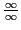

Next:
Limit of a variable
Up:
Differential Calculus and SAGE
Previous:
Exercises
Contents
Index
Theory of limits
Subsections
Limit of a variable
Division by zero excluded
Infinitesimals
The concept of infinity (
)
Limiting value of a function
Continuous and discontinuous functions
Continuity and discontinuity of functions illustrated by their graphs
Fundamental theorems on limits
Special limiting values
Show that
The number
Expressions assuming the form

Exercises
david joyner 2008-08-11